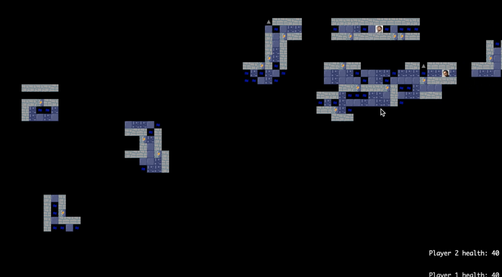

Neutrinos
Beautiful nodal graphs and concept maps, with an interactive UIUX.

Neutrinos is a tool to rapidly generate concept maps for coursework, representing information, and visualizations. The name of this project was inspired by the recent discovery of a new theorem to calculate eigenvectors from eigenvalues by physicists observing neutrino scattering behavior.
Technologies used: ReactJS, CSS
[Photo creds to Hal Gatewood on Unsplash]
HKN's New Website
Serving the Berkeley EECS Community!
As a core officer of the HKN Computing Services Committee, I lead the development of a new modern website for the honor society. The project mainly uses Django, as well as frontend HTML/CSS with Django templating. See our progress here.
Technologies used: Django, HTML, CSS
Torches
Playing with fire only helps you in this two person shooter game.

This was a project that I made for my CCS 61B: Data Structures course at Berkeley. My project partner and I made a random world generator and then added a laser mechanic on top, which could light torches and illuminate squares. We also hosted a dorm tournament, which turned out to be fun!
Technologies used: Java